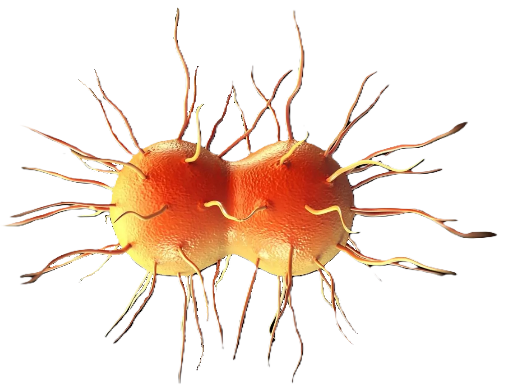
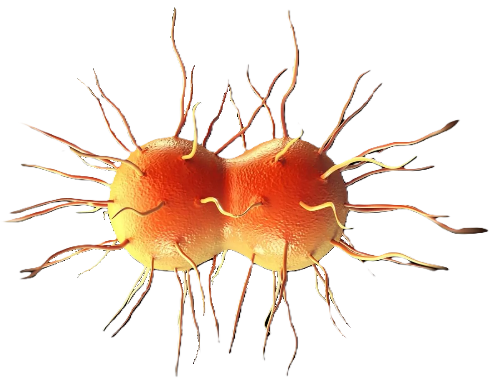

Descripción microbiológica
Neisseria gonorrhoeae es un diplococo gramnegativo (0.6-1.0 µm de diámetro) con forma de grano de café, no esporulado, no móvil y oxidasa-positivo. Presenta fimbrias tipo IV y proteínas de membrana externa (Opa, Por) que median adherencia a epitelios. Es un aerobio estricto que requiere atmósfera enriquecida con 5% CO2. Las colonias en agar Thayer-Martin son convexas, translúcidas y de 1-2 mm tras 48 horas a 35-37°C. No fermenta lactosa ni maltosa, pero sí glucosa, característica clave para su identificación.
Características distintivas
- Tinción: Gram-negativo en pares (diplococos), frecuentemente intracelular en neutrófilos.
- Metabolismo: Oxidasa-positivo, catalasa-positivo, fermenta solo glucosa.
- Resistencias: Alta capacidad de desarrollar resistencia a antibióticos (β-lactámicos, fluoroquinolonas, cefalosporinas).
- Factores de virulencia: Fimbrias, lipooligosacárido (LOS), IgA proteasa, y variación antigénica.
Ecología y transmisión
Exclusivo patógeno humano que coloniza mucosas de tracto urogenital, faringe y recto. No sobrevive en el ambiente exterior debido a su sensibilidad a la desecación y cambios de temperatura. La transmisión ocurre por contacto sexual directo (incluyendo oral-genital) o perinatal (oftalmía neonatal). No tiene reservorios animales. Factores de riesgo incluyen múltiples parejas sexuales, uso inconsistente de condones y coinfección con otras ETS (especialmente Chlamydia trachomatis).
Factores ambientales
- Supervivencia: Muere rápidamente fuera del huésped (<1-2 horas en superficies secas).
- Temperatura óptima: 35-37°C (no crece a temperatura ambiente).
- Biocidas: Sensible a desinfectantes comunes (hipoclorito, alcohol al 70%).
Mecanismos de patogenicidad
Su virulencia deriva de múltiples factores:
| Factor | Mecanismo | Efecto clínico |
|---|---|---|
| Fimbrias tipo IV | Adhesión a epitelio columnar | Colonización inicial |
| Lipooligosacárido (LOS) | Induce respuesta inflamatoria | Exudado purulento |
| IgA proteasa | Degrada IgA secretora | Evasión inmune |
Enfermedades clínicas
- Infecciones sintomáticas: Uretritis (disuria, secreción purulenta), cervicitis, proctitis, faringitis.
- Complicaciones locales: Epididimitis, enfermedad inflamatoria pélvica (EIP), absceso de Bartholin.
- Diseminación: Artritis séptica (80% monoarticular), dermatitis pustulosa, endocarditis (raro).
- Neonatos: Conjuntivitis gonocócica (oftalmía neonatal) que puede llevar a ceguera.
Diagnóstico y tratamiento
Métodos diagnósticos:
- Tinción de Gram (diplococos GN intracelulares en neutrófilos) en exudados.
- Cultivo en medios selectivos (Thayer-Martin, NYC) con confirmación bioquímica.
- Pruebas moleculares (PCR multiplex para ETS) en orina o exudados.
Opciones terapéuticas (según resistencia local):
- Primera línea: Ceftriaxona IM (500 mg) + azitromicina oral (1 g) por resistencia dual.
- Alternativas: Cefixima, espectinomicina (en alergias graves).
- Resistentes: Monitorización de cepas con CMI elevada a cefalosporinas.
Prevención y control
- Protección: Uso correcto de condones, educación sexual.
- Tamizaje: En poblaciones de alto riesgo (hombres que tienen sexo con hombres, trabajadores sexuales).
- Notificación: Enfermedad de declaración obligatoria en la mayoría de países.
- Profílaxis neonatal: Aplicación de nitrato de plata o eritromicina ocular al 0.5%.
Datos epidemiológicos
- 87 millones de casos nuevos anuales globalmente (OMS 2023).
- Aumento del 63% en resistencia a cefalosporinas de espectro extendido (2015-2023).
- Hasta el 50% de infecciones en mujeres pueden ser asintomáticas (reservorio crítico).